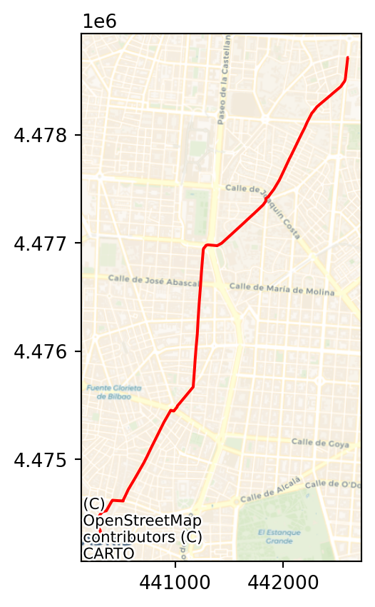
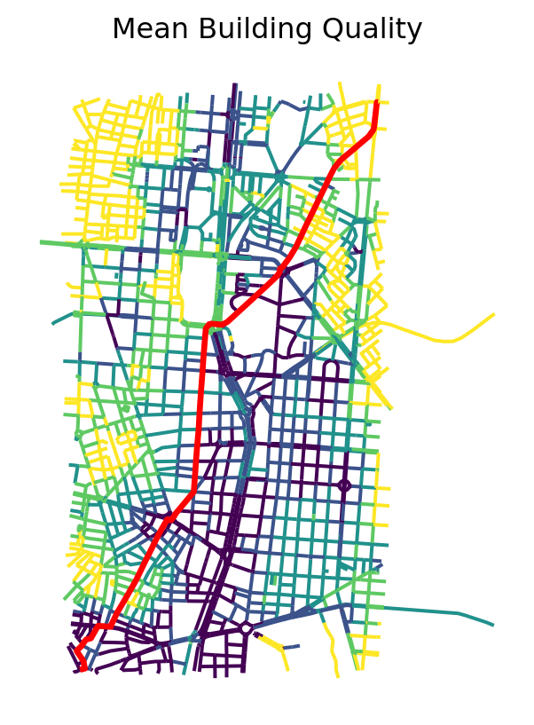

import momepy
import geopandas
import contextily
import xarray, rioxarray
import osmnx as ox
import numpy as np
import matplotlib.pyplot as plt6 Transport costs
6.1 Packages and modules
ox.settings.overpass_settings = (
'[out:json][timeout:90][date:"2021-03-07T00:00:00Z"]'
)6.2 Data
Assuming you have the file locally on the path ../data/:
streets = geopandas.read_file("../data/arturo_streets.gpkg")
abbs = geopandas.read_file("../data/madrid_abb.gpkg")
neis = geopandas.read_file("../data/neighbourhoods.geojson")6.3 pandana graphs
import pandanaBefore building the routing network, we convert to graph and back in momepy to “clean” the network and ensure it complies with requirements for routing.
nodes, edges = momepy.nx_to_gdf( # Convert back to geo-table
momepy.gdf_to_nx( # Convert to a clean NX graph
streets.explode(index_parts='True') # We "explode" to avoid multi-part rows
)
)
nodes = nodes.set_index("nodeID") # Reindex nodes on IDOnce we have nodes and edges “clean” from the graph representation, we can build a pandana.Network object we will use for routing:
streets_pdn = pandana.Network(
nodes.geometry.x,
nodes.geometry.y,
edges["node_start"],
edges["node_end"],
edges[["mm_len"]]
)
streets_pdnGenerating contraction hierarchies with 8 threads.
Setting CH node vector of size 49985
Setting CH edge vector of size 66499
Range graph removed 444 edges of 132998
. 10% . 20% . 30% . 40% . 50% . 60% . 70% . 80% . 90% . 100%<pandana.network.Network at 0x16584a850>6.4 Shortest-path routing
How do I go from A to B?
For example, from the first Airbnb in the geo-table…
first = abbs.loc[[0], :].to_crs(streets.crs)…to Puerta del Sol.
import geopy
geopy.geocoders.options.default_user_agent = "gds4eco"
sol = geopandas.tools.geocode(
"Puerta del Sol, Madrid", geopy.Nominatim
).to_crs(streets.crs)
sol| geometry | address | |
|---|---|---|
| 0 | POINT (440284.049 4474264.421) | Puerta del Sol, Barrio de los Austrias, Sol, C... |
First we snap locations to the network:
pt_nodes = streets_pdn.get_node_ids(
[first.geometry.x.iloc[0], sol.geometry.x.iloc[0]],
[first.geometry.y.iloc[0], sol.geometry.y.iloc[0]]
)
pt_nodes0 3071
1 35729
Name: node_id, dtype: int64Then we can route the shortest path:
route_nodes = streets_pdn.shortest_path(
pt_nodes[0], pt_nodes[1]
)
route_nodesarray([ 3071, 3476, 8268, 8266, 8267, 18695, 18693, 1432, 1430,
353, 8175, 8176, 18121, 17476, 16858, 14322, 16857, 17810,
44795, 41220, 41217, 41221, 41652, 18924, 18928, 48943, 18931,
21094, 21095, 23219, 15398, 15399, 15400, 47446, 47447, 23276,
47448, 23259, 23260, 23261, 27951, 27952, 27953, 48327, 11950,
11949, 11944, 19475, 19476, 27333, 30088, 43294, 11940, 11941,
11942, 48325, 37484, 48316, 15893, 15890, 15891, 29954, 25453,
7341, 34991, 23608, 28217, 21648, 21649, 21651, 39075, 25108,
25102, 25101, 25100, 48518, 47287, 34623, 31187, 29615, 48556,
22844, 48553, 48555, 40922, 40921, 40923, 48585, 46372, 46371,
46370, 45675, 45676, 38778, 38777, 19144, 20498, 20497, 20499,
47737, 42303, 42302, 35730, 35727, 35729])With this information, we can build the route line manually.
The code to generate the route involves writing a function and is a bit more advanced than expected for this course. If this looks too complicated, do not despair.
from shapely.geometry import LineString
def route_nodes_to_line(nodes, network):
pts = network.nodes_df.loc[nodes, :]
s = geopandas.GeoDataFrame(
{"src_node": [nodes[0]], "tgt_node": [nodes[1]]},
geometry=[LineString(pts.values)],
crs=streets.crs
)
return sWe can calculate the route:
route = route_nodes_to_line(route_nodes, streets_pdn)And we get it back as a geo-table (with one row):
route| src_node | tgt_node | geometry | |
|---|---|---|---|
| 0 | 3071 | 3476 | LINESTRING (442606.507 4478714.516, 442597.100... |
Please note this builds a simplified line for the route, not one that is based on the original geometries.
fig, ax = plt.subplots()
route.plot(
figsize=(9, 9),
color="red",
ax=ax
)
contextily.add_basemap(
ax,
crs=route.crs,
source=contextily.providers.CartoDB.Voyager,
zoom=14
)
plt.show()
But distance calculations are based on the original network). If we wanted to obtain the length of the route:
route_len = streets_pdn.shortest_path_length(
pt_nodes[0], pt_nodes[1]
)
round(route_len / 1000, 3) # Dist in Km5.458
Note
Challenge:
- What is the network distance between CEMFI and Puerta del Sol?
- BONUS I: how much longer is it than if you could fly in a straight line?
- BONUS II: if one walks at a speed of 5 Km/h, how long does the walk take you?
6.5 Weighted routing
How do I go from A to B passing by the “best” buildings?
This is really an extension of standard routing that takes advantage of the flexibility of pandana.Network objects.
Note that the route we defined above, does not pass by the “best” buildings.
bb = route.total_bounds
fig, ax = plt.subplots()
streets.cx[
bb[0]: bb[2], bb[1]:bb[3]
].plot(
"average_quality", scheme="quantiles", ax=ax
)
route.plot(color="r", linewidth=2.5, ax=ax)
ax.set_title("Mean Building Quality")
ax.set_axis_off()
plt.show()
The overall process to achieve this is the very similar; the main difference is, when we build the Network object, to replace distance (mm_len) with a measure that combines distance and building quality. Note that we want to maximise building quality, but the routing algorithms use a minimisation function. Hence, our composite index will need to reflect that.
The strategy is divided in the following steps:
- Re-scale distance between 0 and 1
- Build a measure inverse to building quality in the \([0, 1]\) range
- Generate a combined measure (
wdist) by picking a weighting parameter - Build a new
Networkobject that incorporateswdistinstead of distance - Compute route between the two points of interest
For 1., we can use the scaler in scikit-learn:
from sklearn.preprocessing import minmax_scaleThen generate and attach to edges a scaled version of mm_len:
edges["scaled_dist"] = minmax_scale(edges["mm_len"])We can compare distance with scaled distance. The correlation should be perfect, the scaling is only a change of scale or unit.
fig, ax = plt.subplots()
edges.plot.scatter("mm_len", "scaled_dist", ax=ax)
ax.set_title("Distance Vs Scaled Distance")
plt.show()
We move on to 2., with a similar approach. We will use the negative of the building quality average (average_quality):
edges["scaled_inv_bquality"] = minmax_scale(
-edges["average_quality"]
)And again, we can plot the relation between building quality and the scaled quality.
fig, ax = plt.subplots()
edges.plot.scatter(
"average_quality", "scaled_inv_bquality", ax=ax
)
ax.set_title("Quality Vs Inv. Scaled Quality")
plt.show()Taking 1. and 2. into 3. we can build wdist. For this example, we will give each dimension the same weight (0.5), but this is at discretion of the researcher.
w = 0.5
edges["wdist"] = (
edges["scaled_dist"] * w +
edges["scaled_inv_bquality"] * (1-w)
)Now we can recreate the Network object based on our new measure (4.) and provide routing. Since it is the same process as with distance, we will do it all in one go:
# Build new graph object
w_graph = pandana.Network(
nodes.geometry.x,
nodes.geometry.y,
edges["node_start"],
edges["node_end"],
edges[["wdist"]]
)
# Snap locations to their nearest node
pt_nodes = w_graph.get_node_ids(
[first.geometry.x.iloc[0], sol.geometry.x.iloc[0]],
[first.geometry.y.iloc[0], sol.geometry.y.iloc[0]]
)
# Generate route
w_route_nodes = w_graph.shortest_path(
pt_nodes[0], pt_nodes[1]
)
# Build LineString
w_route = route_nodes_to_line(
w_route_nodes, w_graph
)Generating contraction hierarchies with 8 threads.
Setting CH node vector of size 49985
Setting CH edge vector of size 66499
Range graph removed 444 edges of 132998
. 10% . 20% . 30% . 40% . 50% . 60% . 70% . 80% . 90% . 100%Now we are ready to display it on a map:
fig, ax = plt.subplots()
# Building quality
streets.plot(
"average_quality",
scheme="quantiles",
cmap="magma",
linewidth=0.5,
figsize=(9, 9),
ax=ax
)
# Shortest route
route.plot(
color="xkcd:orange red", linewidth=3, ax=ax, label="Shortest"
)
# Weighted route
w_route.plot(
color="xkcd:easter green", linewidth=3, ax=ax, label="Weighted"
)
# Styling
ax.set_axis_off()
plt.legend()
plt.show()
Note
Challenge:
1. Explore the differences in the output of weighted routing if you change the weight between distance and the additional constrain.
2. Recreate weighted routing using the linearity of street segments. How can you go from A to B avoiding long streets?
6.6 Proximity
What is the nearest internet cafe for Airbnb’s without WiFi?
First we identify Airbnb’s without WiFi:
no_wifi = abbs.query(
"WiFi == '0'"
).to_crs(streets.crs)Then pull WiFi spots in Madrid from OpenStreetMap:
icafes = ox.features_from_place(
"Madrid, Spain", tags={"amenity": "internet_cafe"}
).to_crs(streets.crs).reset_index()fig, ax = plt.subplots()
no_wifi.plot(
color="red",
markersize=1,
alpha=0.5,
label="Airbnb no WiFi",
figsize=(9, 9),
ax=ax
)
icafes.plot(
ax=ax, color="lime", label="Internet cafes"
)
contextily.add_basemap(
ax,
crs=no_wifi.crs,
source=contextily.providers.CartoDB.Voyager
)
ax.set_axis_off()
plt.legend()
plt.show()The logic for this operation is the following:
- Add the points of interest (POIs, the internet cafes) to the network object (
streets_pdn) - Find the nearest node to each POI
- Find the nearest node to each Airbnb without WiFi
- Connect each Airbnb to its nearest internet cafe
We can add the internet cafes to the network object (1.) with the set_pois method. Note we set maxitems=1 because we are only going to query for the nearest cafe. This will make computations much faster.
streets_pdn.set_pois(
category="Internet cafes", # Our name for the layer in the `Network` object
maxitems=1, # Use to count only nearest cafe
maxdist=100000, # 100km so everything is included
x_col=icafes.geometry.x, # X coords of cafes
y_col=icafes.geometry.y, # Y coords of cafes
)Once the cafes are added to the network, we can find the nearest one to each node (2.). Note there are some nodes for which we can’t find a nearest cafe. These are related to disconnected parts of the network.
cafe2nnode = streets_pdn.nearest_pois(
100000, # Max distance to look for
"Internet cafes", # POIs to look for
num_pois=1, # No. of POIs to include
include_poi_ids=True # Store POI ID
).join(# Then add the internet cafee IDs and name
icafes[['osmid', 'name']],
on="poi1"
).rename(# Rename the distance from node to cafe
columns={1: "dist2icafe"}
)
cafe2nnode.head()| dist2icafe | poi1 | osmid | name | |
|---|---|---|---|---|
| nodeID | ||||
| 0 | 5101.421875 | 9.0 | 3.770327e+09 | Silver Envíos 2 |
| 1 | 5190.265137 | 9.0 | 3.770327e+09 | Silver Envíos 2 |
| 2 | 5252.475098 | 9.0 | 3.770327e+09 | Silver Envíos 2 |
| 3 | 5095.101074 | 9.0 | 3.770327e+09 | Silver Envíos 2 |
| 4 | 5676.117188 | 9.0 | 3.770327e+09 | Silver Envíos 2 |
To make things easier down the line, we can link cafe2nnode to the cafe IDs. And we can also link Airbnb’s to nodes (3.) following a similar approach as we have seen above:
abbs_nnode = streets_pdn.get_node_ids(
no_wifi.geometry.x, no_wifi.geometry.y
)
abbs_nnode.head()26 8872
50 10905
62 41158
63 34257
221 32215
Name: node_id, dtype: int64Finally, we can bring together both to find out what is the nearest internet cafe for each Airbnb (4.).
abb_icafe = no_wifi[
["geometry"] # Keep only geometries of ABBs w/o WiFi
].assign(
nnode=abbs_nnode # Attach to thse ABBs the nearest node in the network
).join( # Join to each ABB the nearest cafe using node IDs
cafe2nnode,
on="nnode"
)
abb_icafe.head()| geometry | nnode | dist2icafe | poi1 | osmid | name | |
|---|---|---|---|---|---|---|
| 26 | POINT (443128.256 4483599.841) | 8872 | 4926.223145 | 9.0 | 3.770327e+09 | Silver Envíos 2 |
| 50 | POINT (441885.677 4475916.602) | 10905 | 1876.392944 | 19.0 | 6.922981e+09 | Locutorio |
| 62 | POINT (440439.640 4476480.771) | 41158 | 1164.812988 | 17.0 | 5.573414e+09 | NaN |
| 63 | POINT (438485.311 4471714.377) | 34257 | 1466.537964 | 5.0 | 2.304485e+09 | NaN |
| 221 | POINT (439941.104 4473117.914) | 32215 | 354.268005 | 15.0 | 5.412145e+09 | NaN |
Note
Challenge: Calculate distances to nearest internet cafe for ABBs with WiFi. On average, which of the two groups (with and without WiFi) are closer to internet cafes?
6.7 Accessibility
This flips the previous question on its head and, instead of asking what is the nearest POI to a given point, along the network (irrespective of distance), it asks how many POIs can I access within a network-based distance radius?
parks = ox.features_from_place(
"Madrid, Spain", tags={"leisure": "park"}
).to_crs(streets.crs)- For example, how many parks are within 500m(-euclidean) of an Airbnb?
We draw a radius of 500m around each AirBnb:
buffers = geopandas.GeoDataFrame(
geometry=abbs.to_crs(
streets.crs
).buffer(
500
)
)Then intersect it with the location of parks, and count by buffer (ie. Airbnb):
park_count = geopandas.sjoin(
parks, buffers
).groupby(
"index_right"
).size()- How many parks are within 500m(-network) of an Airbnb?
We need to approach this as a calculation within the network. The logic of steps thus looks like:
- Use the aggregation module in
pandanato count the number of parks within 500m of each node in the network - Extract the counts for the nodes nearest to Airbnb properties
- Assign park counts to each Airbnb
We can set up the aggregate engine (1.). This involves three steps:
- Obtain nearest node for each park
parks_nnode = streets_pdn.get_node_ids(
parks.centroid.x, parks.centroid.y
)- Insert the parks’ nearest node through
setso it can be “aggregated”
streets_pdn.set(
parks_nnode, name="Parks"
)- “Aggregate” for a distance of 500m, effectively counting the number of parks within 500m of each node
parks_by_node = streets_pdn.aggregate(
distance=500, type="count", name="Parks"
)
parks_by_node.head()nodeID
0 5.0
1 5.0
2 6.0
3 8.0
4 1.0
dtype: float64At this point, we have the number of parks within 500m of every node in the network. To identify those that correspond to each Airbnb (3.), we first pull out the nearest nodes to each ABB:
abbs_xys = abbs.to_crs(streets.crs).geometry
abbs_nnode = streets_pdn.get_node_ids(
abbs_xys.x, abbs_xys.y
)And use the list to assign the count of the nearest node to each Airbnb:
park_count_network = abbs_nnode.map(
parks_by_node
)
park_count_network.head()0 4.0
1 9.0
2 5.0
3 0.0
4 12.0
Name: node_id, dtype: float64- For which areas do both differ most?
We can compare the two counts above to explore to what extent the street layout is constraining access to nearby parks.
park_comp = geopandas.GeoDataFrame(
{
"Euclidean": park_count,
"Network": park_count_network
},
geometry=abbs.geometry,
crs=abbs.crs
)fig, ax = plt.subplots()
park_comp.plot.scatter("Euclidean", "Network", ax=ax)
ax.axline([0, 0], [1, 1], color='red') #45-degree line
plt.show()Note there are a few cases where there are more network counts than Euclidean. These are due to the slight inaccuracies introduced by calculating network distances from nodes rather than the locations themselves.
Geographically:
fig, axs = plt.subplots(1, 3, figsize=(15, 5))
# Euclidean count
abbs.to_crs(
streets.crs
).assign(
n_parks=park_count
).fillna(0).plot(
"n_parks",
scheme="fisherjenkssampled",
alpha=0.5,
markersize=1,
legend=True,
ax=axs[0]
)
contextily.add_basemap(
axs[0],
crs=streets.crs,
source=contextily.providers.CartoDB.PositronNoLabels
)
axs[0].set_axis_off()
axs[0].set_title("Euclidean Distances")
# Count difference
with_parks = park_comp.query(
"(Network > 0) & (Euclidean > 0)"
)
count_diff = 100 * (
with_parks["Euclidean"] -
with_parks["Network"]
) / with_parks["Euclidean"]
abbs.to_crs(
streets.crs
).assign(
n_parks=count_diff
).dropna().plot(
"n_parks",
scheme="fisherjenkssampled",
alpha=0.5,
markersize=1,
legend=True,
ax=axs[1]
)
contextily.add_basemap(
axs[1],
crs=streets.crs,
source=contextily.providers.CartoDB.PositronNoLabels
)
axs[1].set_axis_off()
axs[1].set_title("Count Difference (%)")
# Network count
abbs.to_crs(
streets.crs
).assign(
n_parks=park_count_network
).fillna(0).plot(
"n_parks",
scheme="fisherjenkssampled",
alpha=0.5,
markersize=1,
legend=True,
ax=axs[2]
)
contextily.add_basemap(
axs[2],
crs=streets.crs,
source=contextily.providers.CartoDB.PositronNoLabels
)
axs[2].set_axis_off()
axs[2].set_title("Network Distances")
plt.show()
Note
Challenge: Calculate accessibility to other ABBs from each ABB through the network. How many ABBs can you access within 500m of each ABB?
Note you will need to use the locations of ABBs both as the source and the target for routing in this case.
6.8 Next steps
If you found the content in this block useful, the following resources represent some suggestions on where to go next:
- The
pandanatutorial and documentation are excellent places to get a more detailed and comprehensive view into the functionality of the library